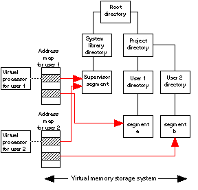
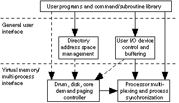
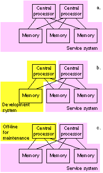

Multics--The first seven years
by F. J. CORBATÓ and J. H. SALTZER
Massachusetts Institute of Technology
Cambridge, Massachusetts
and
C. T. CLINGEN
Honeywell Information Systems Inc.
Cambridge, Massachusetts
INTRODUCTION
In 1964, following implementation of the Compatible Time-Sharing System (CTSS) [1, 2] serious planning began{note 1} on the development of a new computer system specifically organized as a prototype of a computer utility. The plans and aspirations for this system, called Multics (for Multiplexed Information and Computing Service), were described in a set of six papers presented at the 1965 Fall Joint Computer Conference [3-8]. The development of the system was undertaken as a cooperative effort involving the Bell Telephone Laboratories (from 1965 to 1969), the computer department of the General Electric Company, {note 2} and Project MAC of M.I.T. Implicit in the 1965 papers was the expectation that there should be a later examination of the development effort. From the present vantage point, however, it is clear that a definitive examination cannot be presented in a single paper. As a result, the present paper discusses only some of the many possible topics. First we review the goals, history and current status of the Multics project. This review is followed by a brief description of the appearance of the Multics system to its various classes of users. Finally several topics arc given which represent some of the research insights which have come out of the development activities. This organization has been chosen in order to emphasize those aspects of software systems having the goals of a computer utility which we feel to be of special interest. We do not attempt detailed discussion of the organization of Multics; that is the purpose of specialized technical books and papers.{note 3}
GOALS
The goals of the computer utility, although stated at length in the 1965 papers, deserve a brief review. By a computer utility it was meant that one had a community computer facility with:
-
Convenient remote terminal access as the normal mode of system usage;
-
A view of continuous operation analogous to that of the electric power and telephone companies;
-
A wide range of capacity to allow growth or contraction without either system or user reorganization;
-
An internal file system so reliable that users trust their only copy of programs and data to be stored in it;
-
Sufficient control of access to allow selective sharing of information;
-
The ability to structure hierarchically both the logical storage of information as well as the administration of the system;
-
The capability of serving large and small users without inefficiency to either;
-
The ability to support different programming environments and human interfaces within a single system;
-
The flexibility and generality of system organization required for evolution through successive waves of technological improvements and the inevitable growth of user expectations.
In an absolute sense the above goals are extremely difficult to achieve. Nevertheless, it is our belief that Multics, as it now exists, has made substantial progress toward achieving each of the nine goals.{note 4} Most importantly, none of these goals had to be compromised in any important way.
HISTORY OF THE DEVELOPMENT
As previously mentioned, the Multics project got under way in the Fall of 1964. The computer equipment to be used was a modified General Electric 635 which was later named the 645. The most significant changes made were in the processor addressing and access control logic where paging and segmentation were introduced. A completely new Generalized Input/Output Controller was designed and implemented to accommodate the varied needs of devices such as disks, tapes and teletypewriters without presenting an excessive interrupt burden to the processors. To handle the expected paging traffic, a 4-million word (36-bit) high-performance drum system with hardware queuing was developed. The design specifications for these items were completed by Fall 1965, and the equipment became available for software development in early 1967.
Software preparation underwent several phases. The first phase was the development and blocking out of major ideas, followed by the writing of detailed program module specifications. The resulting 3,000 typewritten pages formed the Multics System Programmers' Manual and served as the starting point for all programming. Furthermore, the software designers were expected to implement their own designs. As a general policy PL/I was used as the system programming language wherever possible to maximize lucidity and maintainability of the system. [4, 5] This policy also increased the effectiveness of system programmers by allowing each one to keep more of the system within his grasp. The second major phase of software development, well under way by early 1967, was that of module implementation and unit checkout followed by merging into larger aggregates for integrated testing. Up to then most software and hardware difficulties had been anticipated on the basis of previous experience. But what gradually became apparent as the module integration continued was that there were gross discrepancies between actual and expected performance of the various logical execution paths throughout the software. The result was that an unanticipated phase of design iterations was necessary. These design iterations did not mean that major portions of the system were scrapped without being used. On the contrary, until their replacements could he implemented, often months later, they were crucially necessary to allow the testing and evaluation of the other portions of the system. The cause of the required redesigns was rarely "bad coding" since most of the system programmers were well above average ability. Moreover the redesigns did not mean that the goals of the project were compromised. Rather three recurrent phenomena were observed: (1) typically, specifications representing less-important features were found to be introducing much of the complexity, (2) the initial choice of modularity and interfacing between modules was sometimes awkward and (3) it was rediscovered that the most important property of algorithms is simplicity rather than special mechanisms for unusual cases.{note 5} The reason for bringing out in detail the above design iteration experience is that frequently the planning of large software projects still does not properly take the need for continuing iteration into account. And yet we believe that design iterations are a required activity on any large scale system which attempts to break new conceptual ground such that individual programmers cannot comprehend the entire system in detail. For when new ground is broken, it is usually impossible to deduce the consequent system behavior except by experimental operation. Simulation is not particularly effective when the system concepts and user behavior are new. Unfortunately, one does not understand the system well enough to simplify it correctly and thereby obtain a manageable model which requires less effort to implement than the system itself. Instead one must develop a different view:
-
The initial program version of a module should be viewed only as the first complete specification of the module and should be subject to design review before being debugged or checked out.
-
Module design and implementation should he based upon an assumption of periodic evaluation, redesign, and evolution.
In retrospect, the design iteration effect was apparent even in the development of the earlier Compatible Time Sharing System (CTSS) when a second file system with many functional improvements turned out to have poor performance when initially installed. A hasty design iteration succeeded in rectifying the matter but the episode at the time was viewed as an anomaly perhaps due to inadequate technical review of individual programming efforts.
CURRENT STATUS
In spite of the unexpected design iteration phase, the Multics system became sufficiently effective by late 1968 to allow system programmers to use the system while still developing it. By October 1969, the system was made available for general use on a "cost-recovery" charging basis similar to that used for other major computation facilities at M.I.T. Multics is now the most widely used time-sharing system at M.I.T., supporting a user community of some 500 registered subscribers. The system is currently operated for users 22 hours per day, 7 days per week. For at least eight hours each day the system operates with two processors and three memory modules containing a total of 384k (k = 1024) 36-bit words. This configuration currently is rated at a capacity of about 55 fairly demanding users such that most trivial requests obtain response in one to five seconds. (Future design iterations are expected to increase the capacity rating.) Several times a day during the off-peak usage hours the system is dynamically reconfigured into two systems: a reduced capacity service system and an independent development system. The development system is used for testing those hardware and software changes which cannot be done under normal service operation. The reliability of the round-the-clock system operation described above has been a matter of great concern, for in any on-line real-time system the impact of mishaps is usually far more severe than in batch processing systems. In an on-line system especially important considerations are:
-
the time required before the system is usable again following a mishap,
-
the extra precautions required for restoring possibly lost files, and
-
the psychological stress of breaking the interactive dialogue with users who were counting on system availability.
Because of the importance of these considerations, careful logs are kept of all Multics "crashes" (i.e., system service disruption for all active users) at M.I.T. in order that analysis can reveal their causes. These analyses indicate currently an average of between one and two crashes per 24 hour day. These crashes have no single cause. Some are due to hardware failures, others to operator error and still others to software bugs introduced during the course of development. At the two other sites where Multics is operated, but where active system development does not take place, there have been almost no system failures traced to software. Currently the Multics system, including compilers, commands, and subroutine libraries, consists of about 1500 modules, averaging roughly 200 lines of PL/I apiece. These compile to produce some 1,000,000 words of procedure code. Another measure of the system is the size of the resident supervisor which is about 30k words of procedure and, for a 55 user load, about 36k words of data and buffer areas. Because the system is so large, the most powerful maintenance tool available was chosen--the system itself. With all of the system modules stored on-line, it is easy to manipulate the many components of different versions of the system. Thus it has been possible to maintain steadily for the last year or so a pace of installing 5 or 10 new or modified system modules a day. Some three-quarters of these changes can be installed while the system is in operation. The remainder, pertaining to the central supervisor, are installed in batches once or twice a week. This on-line maintenance capability has proven indispensable to the rapid development and maintenance of Multics since it permits constant upgrading of the user interface without interrupting the service. We are just beginning to see instances of user-written applications which require this same capability so that the application users need not be interrupted while the software they are using is being modified. The software effort which has been spent on Multics is difficult to estimate. Approximately 150 man-years were applied directly to design and system programming during the "development-only" period of Table I.
TABLE I--A comparison of the system development and use periods of CTSS and Multics. The Multics development period is not significantly longer than that for CTSS despite the development of about 10 times as much code for Multics as for CTSS and a geographically distributed staff. Although reasons for this similarity in time span include the use of a higher level programming language and a somewhat larger staff, the use of CTSS as a development tool for Multics was of pivotal importance.
| System | Development Only |
Development + Use |
Use Only | |
|---|---|---|---|---|
| CTSS | 1960-1963 | 1963-1965 | 1965-present | |
| Multics | 1964-1969 | 1969-present |
Since then we estimate that another 50 man-years have been devoted to improving and extending the system. But the actual cost of a single successful system is misleading, for if one starts afresh to build a similar system, one must compensate for the non-zero probability of failure.
THE APPEARANCE OF MULTICS TO ITS USERS
Having reviewed the background of the project, we may now ask who are the users of the Multics system and what do the facilities that Multics provides mean to these users. Before answering, it is worth describing the generic user as "viewed" by Multics. Although from the system's point of view all users have the same general characteristics and interface with it uniformly, no single human interface represents the Multics machine. That machine is determined by each user's initial procedure coupled with those functions accessible to him. Thus there exists the potential to present each Multics user with a unique external interface. However, Multics does provide a native internal program environment consisting of a stack-oriented, pure-procedure, collection of PL/I procedures imbedded in a segmented virtual memory containing all procedures and data stored on-line. The extent to which some, all, or none of this internal environment is visible to the various users is an administrative choice. The implications of these two views--both the external interface and the internal programming environment--are discussed in terms of the following categories
-
System programmers and user application programmers responsible for writing system and user software.
-
Administrative personnel responsible for the management of system resources and privileges.
-
The ultimate users of applications systems.
-
Operations and hardware maintenance personnel responsible, respectively, for running the machine room and maintaining the hardware.
Multics as viewed by system and subsystem programmers
The machine presented to both the Multics system programmer and the application system programmer is the one with which we have the most experience; it is the raw material from which one constructs other environments. It is worth reemphasizing that the only differentiation between Multics system programmers and user programmers is embodied in the access control mechanism which determines what on-line information can be referenced; therefore, what are apparently two groups of users can be discussed as one. Major interfaces presented to programmers on the Multics system can be classified as the program preparation and documentation facilities and the program execution and debugging environment. They will be touched upon briefly, in the order used for program preparation.
Program preparation and documentation
The facilities for program preparation on Multics are typical of those found on other time-sharing systems, with some shifts in emphasis (see the Appendix). For example, programmers consider the file system sufficiently invulnerable to physical loss that it is used casually and routinely to save all information. Thus, the punched card has vanished from the work routine of Multics programmers and access to one's programs and the ability to work on them are provided by the closest terminal. As another example, the full ASCII character set is employed in preparing programs, data, and documentation, thereby eliminating the need for multiple text editors, several varieties of text formatting and comparison programs, and multiple facilities for printing information both on-line and off-line. This generalization of user interfaces facilitates the learning and subsequent use of the system by reducing the number of conventions which must be mastered. Finally, because the PL/I compiler is a large set of programs, considerable attention was given to shielding the user from the size of the compiler and to aiding him in mastering the complexities of the language. As in many other time-sharing systems, the compiler is invoked by issuing a simple command line from a terminal exactly as for the less ambitious commands. No knowledge is required of the user regarding the various phases of compilation, temporary files required, and optional capabilities for the specialist; explanatory "sermons" diagnosing syntactic errors are delivered to the terminal to effect a self-teaching session during each compilation. To the programmer, the PL/I compiler is just another command.
Program execution environment
Another set of interfaces is embodied in the implementation environment seen by PL/I programmers. This environment consists of a directly addressable virtual memory containing the entire hierarchy of on-line information, a dynamic linking facility which searches this hierarchy to bind procedure references, a device-independent input/output [16] system,{note 6} and program debugging and metering facilities. These facilities enjoy a symbiotic relationship with the PL/I procedure environment used both to implement them and to implement user facilities co-existing with them. Of major significance is that the natural internal environment provided and required by the system is exactly that environment expected by PL/I procedures. For example, PL/I pointer variables, call and return statements, conditions, and static and automatic storage all correspond directly to mechanisms provided in the internal environment. Consequently, the system supports PL/I code as a matter of course. The main effect of the combination of these features is to permit the implementer to spend his time concentrating on the logic of his problem; for the most part he is freed from the usual mechanical problems of storage management and overlays, input/output device quirks, and machine-dependent features.
Some implementation experience
The Multics team began to be much more productive once the Multics system became useful for software development. A few cases are worth citing to illustrate the effectiveness of the implementation environment. A good example is the current PL/I compiler, which is the third one to be implemented for the project, and which consists of some 250 procedures and about 125k words of object code. Four people implemented this compiler in two years, from start to first general use. The first version of the Multics program debugging system, composed of over 3,000 lines of source code, was usable after one person spent some six months of nights and weekends "bootlegging" its implementation. As a last example, a facility consisting of 50 procedures with a total of nearly 4,000 PL/I statements permitting execution of Honeywell 635 programs under Multics became operational after one person spent eight months learning about the GCOS operating system for the 635, PL/I, and Multics, and then implemented the environment. In each of these examples the implementation was accomplished from remote terminals using PL/I. Multics users have discovered that it is possible to get their programs running very quickly in this environment. They frequently prepare "rough drafts" of programs, execute them, and then improve their overall design and operating strategy using the results of experience obtained during actual operation. As an example, again drawn from the implementation of Multics, the early designs and implementations of the programs supporting the virtual memory [18] made over optimistic use of variable-sized storage allocation techniques. The result was a functionally correct but inadequately performing set of programs. Nevertheless, these modules were used as the foundation for subsequent work for many months. When they were finally replaced with modules using simplified fixed-size storage techniques, performance improvements of over an order of magnitude were realized. This technique emphasizes two points: first, it is frequently possible to provide a practical, usable facility containing temporary versions of programs; second, often the insight required to significantly improve the behavior of a program comes only after it is studied in operation. As implied in the earlier discussion of design iteration, our experience has been that structural and strategic changes rather than "polishing" (or recoding in assembly language) produce the most significant performance improvements. In general, we have noticed a significant "amplifier" or "leverage" effect with the use of an effective on-line environment as a system programming facility. Major implementation projects on the Multics system seldom involve more than a few programmers, thereby easing the management and communications problems usually entailed by complex system implementations. As would be expected, the amplification effect is most apparent with the best project personnel.
Administration of Multics facilities and resources
The problem of managing the capabilities of a computer utility with geographically dispersed subscribers leads to a requirement of decentralized administration. At the apex of an administrative pyramid resides a system administrator with the ability to register new users, confer resource quotas, and generate periodic bills for services rendered. The system administrator deals with user groups called projects. Each group can in turn designate a project administrator who is delegated the authority to manage a budget of system resources on behalf of the project. The project administrator is then free to deal directly with project members without further intervention from the system administrator, thereby greatly reducing the bottlenecks inherent in a completely centralized administrative structure.
Environment shaping
In addition to having immediate control of such resources as secondary storage, port access, and rate of processor usage, the project administrator is also able to define or shape the environment seen by the members of his project when they log into the system. He does this by defining those procedures that can be accessed by members of his project and by specifying the initial procedure executed by each member of his project when he logs in. This environment shaping facility has led to the notion of a private project subsystem on Multics. It combines the administrative and programming facilities of Multics so that a project administrator and a few project implementers can build, maintain, and evolve environments entirely on their own. Thus, some subsystems bear no internal resemblance to the standard Multics procedure environment. For example, the Dartmouth BASIC [9] compiler executes in a closed subsystem implemented by an M.I.T. student group for use by undergraduate students. The compiler, its object code, and all support routines execute in a simulation of the native environment provided at Dartmouth. The users of this subsystem need little, if any, knowledge of Multics and are able to behave as if logged into the Dartmouth system proper. Other examples of controlled environment subsystems include one to permit many programs which normally run under the GCOS operating system to also run unmodified in Multics. Finally, an APL [20] subsystem allows the user to behave for the most part as if he were logged into an APL machine. The significance of these subsystems is that their implementers did not need to interact with the system administrator or to modify already existing Multics capabilities. The administrative facilities permit each such subsystem to be offered by its supporters as a private service with its own group of users, each effectively having its own private computer system.
Other Multics users
Finally, we observe that the roles of the application user, the system operators and the hardware maintainers as seen by the system are simply those of ordinary Multics users with specialized access to the on-line procedures and data. The effect of this uniformity of treatment is to reduce greatly the maintenance burden of the system control software. One example, of great practical importance, has been the ease with which system performance measurement tools have been prepared for use by the operating staff.
INSIGHTS
So far, we have discussed the status and appearance of the Multics system. A further question is what has been learned in the construction of Multics which is of use to the designers of other systems. Having a bright idea which clearly solves a problem is not sufficient cause to claim a contribution if the idea is to be part of a complex system. In order to establish the real feasibility of an idea, all of its implications and consequences must be followed out. Much of the work on Multics since 1965 has involved following out implications and consequences of the many ideas then proposed for the prototype computer utility. That following out is an essential part of proof of ideas is attested by the difficulties which have been encountered in other engineering efforts such as the development of nuclear fusion power plants and the electric automobile. Not all proposals work out; for example, extended attempts to engineer an atomic powered airplane suggest infeasibility. Perhaps Multics' most significant single contribution to the state of the art of computer system construction is the demonstration of a large set of fully implemented ideas in a working system. Further, most of these ideas have been integrated without straining the overall design; most additional proposals would not topple the structure. Ideas such as virtual memory access to on line storage, parallel process organization, routine but controlled information sharing, dynamic linking of procedures, and high-level language implementation have proven remarkably compatible and complementary. To illustrate some of the areas of progress in under standing of system organization and construction which have been achieved in Multics, we consider here the following five topics:
-
Modular division of responsibility
-
Dynamic reconfiguration
-
Automatically managed multilevel memory
-
Protection of programs and data
-
System programming language
Modular division of responsibility
Early in the design of Multics a decision had to be made whether or not to treat the segmented virtual memory as a separately usable "feature," independent of a traditionally organized read/write type file system. The alternative, to use the segmented virtual memory as the file system itself, providing the illusion of direct "in-core" access to all on-line storage, was certainly the less conservative approach (see Figure 1).

Figure 1--The entire storage hierarchy may be mapped into individual user process address spaces (see arrows) as if contained in primary memory. Illustrated are the sharing of a supervisor segment by user 1 and user 2 and private access to segment a and segment b. The necessary primary storage is simulated by a demand paging technique which moves information between the real primary memory and secondary storage.
The second approach, which was the one chosen, led to a strong test of the ability of a computing system to support an apparent one-level memory for an arbitrarily large in formation base. It is interesting that the resulting almost total decoupling between physical storage allocation and data movement on the one hand and directory structure, naming, and file organization on the other led to a remarkably simple and functionally modular structure for that part of the system [8] (see Figure 2).

Figure 2 Major lines of modular division in Multics. Solid lines indicate calls for services. Dotted lines indicate implicit use of the virtual memory.
Another area of Multics in which a high degree of functional modularity was achieved was in the area of scheduling, multiprogramming, and processor management. Because harnessing of multiple processors was an objective from the beginning, a careful and methodical approach to multiplexing processors, handling interrupts, and providing interprocess synchronizing primitives was developed. The resulting design, known as the Multics traffic controller, absorbed into a single, simple module a set of responsibilities often diffused among a scheduling algorithm, the input/output controlling system, the on-line file management system, and special purpose inter-user communication mechanisms. [21] Finally, with processor management and on-line storage management uncoupled into well-isolated modules, the Multics input/output system was left with the similarly isolatable function of managing streams of data flowing from and to source and sink type devices. [16] Thus, this section of the system concentrates only on switching of the streams, allocation of data buffering areas, and device control strategies. Each of the divisions of labor described above represents an interesting result primarily because it is so difficult to discover appropriate divisions of complex systems.{note 7} Establishing that a certain proposed division results in simplicity, creates an uncluttered interface, and does not interfere with performance, is generally cause for a minor celebration.
Dynamic reconfiguration
If the computer utility is ever to become as much a reality as the electric power utility or the telephone communication service, its continued operation must not be dependent upon any single physical component, since individual components will eventually require maintenance. This observation leads an electric power utility to provide procedures whereby an idle generator may be dynamically added to the utility's generating capacity, while another is removed for maintenance, all without any disruption of service to customers. A similar scenario has long been proposed for multiprocessor, multimemory computer systems, in which one would dynamically switch processors and memory boxes in and out of the operating configuration as needed. Unfortunately, though there have been demonstrated a few "special purpose" designs,{note 8} it has not been apparent how to provide for such operations in a general purpose system. A recent thesis [24] proposed a general model for the dynamic binding and unbinding of computation and memory structures to and from ongoing computations. Using this model as a basis, the thesis also proposed a specific implementation for a typical multiprocessor, multimemory computing system. One of the results of this work was the addition to the operating Multics system of the capability of dynamically adding and removing central processors and memory modules as in Figure 3.

Figure 3 Dynamic reconfiguration permits switching among the three typical operating configurations shown here, without currently logged-in users being aware that a change has taken place.
The usefulness of the idea may be gauged by observing that at M.I.T. five to ten such reconfigurations are performed in a typical 24-hour operating day. Most of the reconfigurations are used to provide a secondary system for Multics development.
Automatically managed multilevel memory
By now it has become accepted lore in the computer system field that the use of automatic management algorithms for memory systems constructed of several levels with different access times can provide a significant reduction of user programming effort. Examples of such automatic management strategies include the buffer memories of the IBM system 370 models 155, 165, and 195 [25] and the demand paging virtual memories of Multics, IBM's CP-67 [26] and the Michigan Terminal System. [17] Unfortunately, behind the mask of acceptance lies a worrisome lack of knowledge about how to engineer a multilevel memory system with appropriate strategy algorithms which are matched to the load and hardware characteristics. One of the goals of the Multics project has been to instrument and experiment with the multilevel memory system of Multics, in order to learn better how to predict in advance the performance of proposed new automatically managed multilevel memory systems. Several specific aspects of this goal have been explored:
-
A strategy to treat core memory, drum, and disk as a three-level system has been proposed, including a "least-recently-used" algorithm for moving information from drum to disk. Such an algorithm has been used for some time to determine which pages should be removed from core memory. [27] The dynamics of interaction among two such algorithms operating at different levels are weakly understood, and some experimental work should provide much insight. The proposed strategy will he implemented, and then compared with the simpler present strategy which never moves things from drum to disk, but instead makes educated "guesses" as to which device is most appropriate for the permanent residence of a given page. If the automatic algorithm is at least as good as the older, static one, it would represent an improvement in overall design by itself, since it would automatically track changes in user behavior, while the static algorithm requires attention to the validity of its guesses.
-
A scheme to permit experimentation with predictive paging algorithms was devised. The scheme provides for each process a list of pages to be preloaded whenever the process is run, and a second list to be immediately purged whenever the process stops. The updating of these lists is controlled by a decision table exercised every time the process stops running. Since every page of the Multics virtual memory is potentially shared, the decision table represents a set of heuristics designed to separate out those which are probably not being shared at the moment.
-
A series of measurements was made to establish the effectiveness of a small hardware associative memory used to hold recently accessed page descriptors. These measurements established a profile of hit ratio (probability of finding a page descriptor in the associative memory) versus associative memory size which should be useful to the designers of virtual memory systems. [28]
-
A set of models, both analytic and simulation, was constructed to try to understand program behavior in a virtual memory. So far, two results have been obtained. One is the finding that a single program characteristic (the mean execution time before encountering a "missing" page in the virtual memory as a function of memory size) suffices to provide a quite accurate prediction of paging and idle overheads. The second is direct calculation of the distribution of response times under multiprogramming. Having available the entire response time distribution, rather than just averages, permits estimation of the variance and 90-percentile points of the distribution, which may be more meaningful than just the average. A doctoral thesis is in progress on this topic.
Although the immediate effect of each of these investigations is to improve the understanding or performance of the current version of Multics, the long range payoff in methodical engineering using better understood memory structures is also evident.
Protection of programs and data
A long-standing objective of the public computer utility has been to provide facilities for the protection of executing programs from one another, so that users may with confidence place appropriate control on the release of their private information. In 1967, a mechanism was proposed [29] and implemented in software which generalized the usual supervisor-user protection relationship. This mechanism, named "rings of protection," provides user-written subsystems with the same protection from other users that the supervisor has, yet does not require that the user-written subsystem be incorporated into the supervisor. Recently, this approach was brought under intense review, with two results:
-
A hardware architecture which implements the mechanism was proposed. [30] One of the chief features of the proposed architecture is that subroutine calls from one protection ring to another use exactly the same mechanisms as do subroutine calls among procedures within a protection area. The proposal appears sufficiently promising that it is included in the specifications for the next generation of hardware to be used for Multics.
-
As an experiment in the feasibility of a multilayered supervisor, several supervisor procedures which required protection, but not all supervisor privileges, were moved into a ring of protection intermediate between the users and the main supervisor. The success of this experiment established that such layering is a practical way to reduce the quantity of supervisor code which must be given all privileges.
Both of these results are viewed as steps toward first, a more complete exploitation and understanding of rings of protection, and later, a less constrained organization of the type suggested by Evans and LeClerc [31] and by Lampson. [32] But more importantly, rings of protection appear applicable to any computer system using a segmented virtual memory. Two doctoral theses are under way in this area.
System programming language
Another technique of system engineering methodology being explored within the Multics project is that of higher level programming language for system implementation. The initial step in this direction (which proved to be a very big step) was the choice of the PL/I language for the implementation of Multics. By now, Multics offers an extensive case study in the viability of this strategy. Not only has the cost of using a higher level language been acceptable, but increased maintainability of the software has permitted more rapid evolution of the system in response to development ideas as well as user needs. Three specific aspects of this experience have now been completed:
-
The transition from an early PL/I subset compiler [14] to a newer compiler which handles almost the entire language was completed. This transition was carried out with performance improvement in practically every module converted in spite of the larger language involved. The significance of the transition is the demonstration that it is not necessary to narrow one's sights to a "simple" subset language for system programming. If the language is thoroughly understood, even a language as complex as the full PL/I can be effectively used. As a result, the same language and compiler provided for users can also be used for system implementation, thereby minimizing maintenance, confusion, and specialization.
-
Notwithstanding the observation just made, the time required to implement a full PL/I compiler is still too great for many situations in which the compiler implementation cannot be started far enough in advance of system coding. For this reason, there is considerable interest in defining a smaller language which is easily compilable, yet retains the features most important for system implementation. On the basis of the experience of programming Multics in a subset of PL/I, such a language was defined but not implemented, since it was not needed. [33]
-
A census of Multics system modules reveals how much of the system was actually coded in PL/I, and reasons for use of other languages. Roughly, of the 1500 system modules, about 250 were written in machine language. Most of the machine language modules represent data bases or small subroutines which execute a single privileged instruction. (No attempt was made to provide either a data base compiler or PL/I built-in functions for specialized hardware needs.) Significantly, only a half dozen areas (primarily in the traffic controller, the central page fault path, and interrupt handlers) which were originally written in PL/I have been recoded in machine language for reasons of squeezing out the utmost in performance. Several programs, originally in machine language, have been recoded in PL/I to increase their maintainability.
As with the earlier topics, the implications of this work with PL/I should be felt far beyond the Multics system. Most implementers, when faced with the economic uncertainties of a higher-level language, have chosen machine language for their central operating systems. The experience of PL/I in Multics when added to the expanding collection of experience elsewhere [34] should help reduce the uncertainty. In a research project as large, long, and complex as Multics, any paper such as this must necessarily omit many equally significant ideas, and touch only a few which may happen to have wide current interest. It is the purpose of individual and detailed technical papers to explain these and other ideas more fully. The bibliography found in Reference 35 contains over twenty such technical papers.
Immediate future plans
The Multics software is continuing to evolve in response to user needs and improved understanding of its organization. In 1972 a new hardware base for Multics will be installed by the Information Processing Center at M.I.T. for use by the M.I.T. computing community. This program compatible hardware base contains small but significant architectural extensions to the current hardware. The circuit technology used will be that of the Honeywell 6080 computer. The substantial changes include:
-
replacement of the high-performance paging drum initially with bulk core and, when available, LSI memory, and
-
implementation of rings of protection as part of the paging and segmentation hardware.
Wherever possible the strategy of using off-the-shelf standard equipment rather than specially engineered units for Multics has been followed. This strategy is intended to simplify maintenance.
CONCLUSIONS
There are many conclusions which could possibly be drawn from the experience of the Multics project. Of these, we consider four to be major and worthy of note. First, we feel it is clear that it is possible to achieve the goals of a prototype computer utility. The current implementation of Multics provides a measure of the mechanisms required. Moreover, the specific implementation of the system, because it has been written in PL/I, forms a model for other system designers to draw upon when constructing similar systems. Second, the question of whether or not the specific software features and mechanisms which were postulated for effective computer utility operation are desirable has now been tested with specific user experience. Although the specific mechanisms implemented subsequently may be superseded by better ones, it is certainly clear that the improvement of the user environment which was wanted has been achieved. Third, systems of the computer utility class must evolve indefinitely since the cost of starting over is usually prohibitive and the many-year lead time required may be equally unacceptable. The requirement of evolvability places stringent demands on design, maintainability, and implementation techniques. Fourth and finally, the very act of creating a system which solves many of the problems posed in 1965 has opened up many new directions of research and development. It would appear almost a certainty that increased user aspirations will continue to require intensive work in the areas of computer system principles and techniques. In closing, perhaps we should take note that in the seven years since Multics was proposed, a great many other systems have also been proposed and constructed; many of these have developed similar ideas.{note 9} In most cases, their designers have developed effective implementations which are directed to a different interpretation of the goals, or to a smaller set of goals than those required for the complete computer utility. This diversity is valuable, and probably necessary, to accomplish a thorough exploration of many individually complex ideas, and thereby to meet a future which holds increasing demand for systems which embrace the totality of computer utility requirements.
ACKNOWLEDGMENT
It is impossible to acknowledge accurately the contributions of all the individuals or even the several organizations which have given various forms of support to the development of Multics over the past seven years. As would be expected of any multi-organization project spanning several years there has been a turnover in the personnel involved. As the individual contributors now number in the hundreds, proper recognition cannot be given here. Instead, since the development of significant features and designs of Multics has occurred in specific areas and disciplines such as input/output, virtual memory design, languages, and resource multiplexing, a more accurate delineation of achievements should be made in specialized papers. So in the end we must defer to the authors of individual papers, past and future, to acknowledge the efforts of some of the many contributors who have made the evolution of Multics possible.
REFERENCES
F J CORBATÓ M M DAGGETT R C DALEY
An experimental time-sharing system
AFIPS Conf Proc 21 Spartan Books 1962 pp 335-344P A CRISMAN Ed
The compatible time-sharing system: A programmer's guide
2nd ed MIT Press Cambridge Massachusetts 1965F J CORBATÓ V A VYSSOTSKY
"Introduction and overview of the Multics system"
AFIPS Conf Proc 27 1965 FJCC Spartan Books Washington DC 1965 pp 185-196E L GLASER et al
"System design of a computer for time-sharing application"
AFIPS Conf Proc 27 1965 FJCC Spartan Books Washington DC 1965 pp 197-202V A VYSSOTSKY et al
"Structure of the Multics supervisor"
AFIPS Conf Proc 27 1965 FJCC Spartan Books Washington DC 1965 pp 203-212R C DALEY P G NEUMANN
"A general-purpose file system for secondary storage"
AFIPS Conf Proc 27 1965 FJCC Spartan Books Washington DC 1965 pp 213-229J F OSSANNA et al
"Communication and input/output switching in a multiplex computing system"
AFIPS Conf Proc 27 1965 FJCC Spartan Books Washington D C 1965 pp 231-241E E DAVID JR R M FANO
"Some thoughts about the social implications of accessible computing"
AFIPS Conf Proc 27 1965 FJCC Spartan Books Washington DC 1965 pp 243-247E I ORGANICK
The Multics system: An examination of its structure
MIT Press (in press) Cambridge Massachusetts and London EnglandR W WATSON
Timesharing system design concepts
McGraw-Hill Book Company New York 1970W T COMFORT
A computing system design for user service
AFIPS Conf Proc 27 1965 FJCC Spartan Books Washington DC 1965 pp 619-626A S LETT W L KONIGSFORD
TSS/360: A time-shared operating system
AFIPS Conf Proc 33 1968 FJCC Thompson Books pp 15-28R E SCHWEMM
Experience gained in the development and use of TSS/360
AFIPS Conf Proc 40 1972 SJCC AFIPS Press (This volume)F J CORBATO
PL/I as a tool for system programming
Datamation 15 6 May 1969 pp 68-76R A FREIBURGHOUSE
The Multics PL/I compiler
AFIPS Conf Proc 35 1969 FJCC AFIPS Press 1969 pp 187-199R J FEIERTAG E I ORGANICK
The Multics input-output system
ACM Third Symposium on Operating Systems Principles October 18-20 1971 pp 35 41M T ALEXANDER
Organization and features of the Michigan terminal system
AFIPS Conf Proc 40 1972 SJCC AFIPS Press (This volume)A BENSOUSSAN C T CLINGEN R C DALEY
The Multics virtual memory
ACM Second Symposium on Operating System Principles October 20-22 1969 Princeton University pp 30-42BASIC
Fifth Edition Kiewit Computation Center Dartmouth College September 1970APL\360 User's manual
IBM form number GH20-0683-1 March 1970J H SALTZER
Traffic control in a multiplexed computer system
ScD Thesis MIT Department of Electrical Engineering 1966 Also available as Project MAC technical report TR-30E W DIJKSTRA
The structure of the 'THE'-Multiprogramming system
Comm ACM 11 5 May 1968 pp 341-346R W PARKER
The Sabre system
Datamation 11 9 September 1965 pp 49-52R R SCHELL
Dynamic reconfiguration in a modular computer system
PhD Thesis MIT Department of Electrical Engineering 1971 Also available as Project MAC technical report TR86C J CONTI
Concepts for buffer storage
IEEE Computer Group News March 1969 pp 9-13R A MEYER L H SEAWRIGHT
A virtual machine time-sharing system
IBM Systems Journal 9 3 1970 pp 199-218F J CORBATÓ
A paging experiment with the Multics system
In Honor of P M Morse MIT Press Cambridge Massachusetts 1969 pp 217-228M D SCHROEDER
Performance of the GE 645 associative memory while Multics is in operation
ACM Workshop on System Performance Evaluation April 1971 pp 227-245R M GRAHAM
Protection in an information processing utility
Comm ACM 11 5 May 1968 pp 365-369M D SCHROEDER J H SALTZER
A hardware architecture for implementing protection rings
ACM Third Symposium on Operating Systems Principles October l8-20 1971 pp 42-54D C EVANS J Y LeCLERC
Address mapping and the control of access in an interactive computer
AFIPS Conf Proc 30 1967 SJCC Thompson Books 1967 pp 23-30B W LAMPSON
An overview of the CAL timesharing system
Computer Center University of California Berkeley September 5 1969D D CLARK R M GRAHAM J H SALTZER M D SCHROEDER
Classroom information and computing service
MIT Project MAC Technical Report TR-80 January 11 1971J E SAMMETT
Brief survey of languages used for systems implementation
SIGPLAN Notices 6 9 October 1971 pp 1-19The multiplexed information and computing service: Programmers' manual
MIT Project MAC Rev 10 1972 (Available from the MIT Information Processing Center)
APPENDIX:A CHECKLIST OF MULTICS FEATURES
Following is a checklist of currently available features and facilities of Multics. Although many of the features are described in cryptic and untranslated local jargon, one can at least obtain a feel for the range of facilities now provided. Further information on most of these features may be found in the Multics Programmers' Manuals [35].
-
Interactive Time-Sharing Facilities
- file editors
- file manipulation (rename/move/delete)
- personal command abbreviations
- recursive command language
- source language debugging with breakpoints
- subroutine call tracer
- can stop any running command or program
- Programming Languages
-
Information Storage System
- configuration independent
- accessed through virtual memory (segments)
- access control lists by user and project
- links to segments of other users
- hierarchical directory (catalog) arrangement
- public library facilities
- sharing at all levels
- multiple segment names (synonyms)
- separate control of read, write, and execute
-
Programming Environment
- segmented virtual memory
- dynamic linking of procedures and data, or prelinking
- interprocess communication
- independent of configuration
- uniform error handling mechanism
- user definable protection rings
- microsecond calendar clock with interrupt
- program interrupt signal from console
-
Input and Output
- standard typewriter interface for device independence
- ASCII character set used throughout
- input characters converted to canonical form
- erase and kill editing on typed input
- I/O streams switchable during execution
- magnetic tape, printer, card punch, card reader
-
typewriter terminals:
- IBM 2741, 1050
- Teletype 37, 33, 35
- Dura, Datel, Execuport, Terminet-300
- graphic support library (devices: ARDS, IMLAC, DEC 338)
-
ARPA network interfaces at three levels:
- formatted data conversion
- bit stream control
- full device control
-
Management Facilities
- passwords required for login
- project may interpose authentication procedure
- decentralized projects
- accounting, billing, and quotas
- on-line probing and account adjustment
- operator or system initiated logout of users
- unlisted and anonymous users
- limited service system
- dynamic reconfiguration of memories and processors
- system performance metering for parameter adjustment
- project-imposed starting procedure
-
Communication Facilities
- interuser mail
- help command; help files
- message of the day
- on-line error reporting and consultation service
- on-line user graffiti board
- operations message broadcast to logged-in users
-
Absentee Facilities
- priority/defer queues for printer, card punch
- queued translator facility
- general absentee job facility
-
Reliability Measures
- weekly file copies onto tape
- daily disk/drum copy onto tape
- incremental file copies onto tape, 1/2 hour behind use
- salvager to clean up files after system crash
- emergency shutdown entry to system
-
Maintenance Features
- on-line library change, no disruption of current users
- entire system source on-line, maintenance tools system checkout on small hardware configuration
-
on-line performance monitoring of
- multiprogramming
- paging traffic
- drum/disk usage
- typewriter traffic
-
user performance feedback:
- CPU time and paging load on each command
- page trace always operating
- subroutine call counters
-
Private Project Subsystems
- project providable command interface
- Dartmouth environment{note 10}
- student environment
-
Miscellaneous Facilities
- desk calculators
- sort command
- memorandum formatting and typing subsystem
- user-provided list of programs to be automatically executed when user logs in
- GCOS environment
1972 Spring Joint Computer Conference
© Copyright 1972, AFIPS PRESS. Posted with permission.